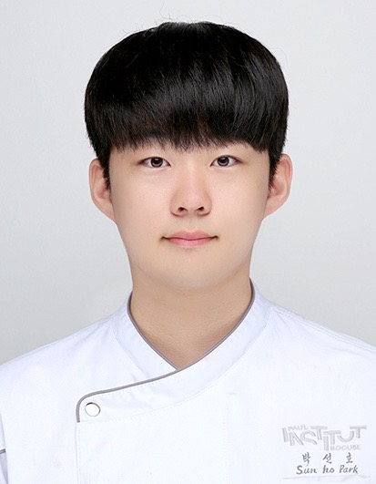
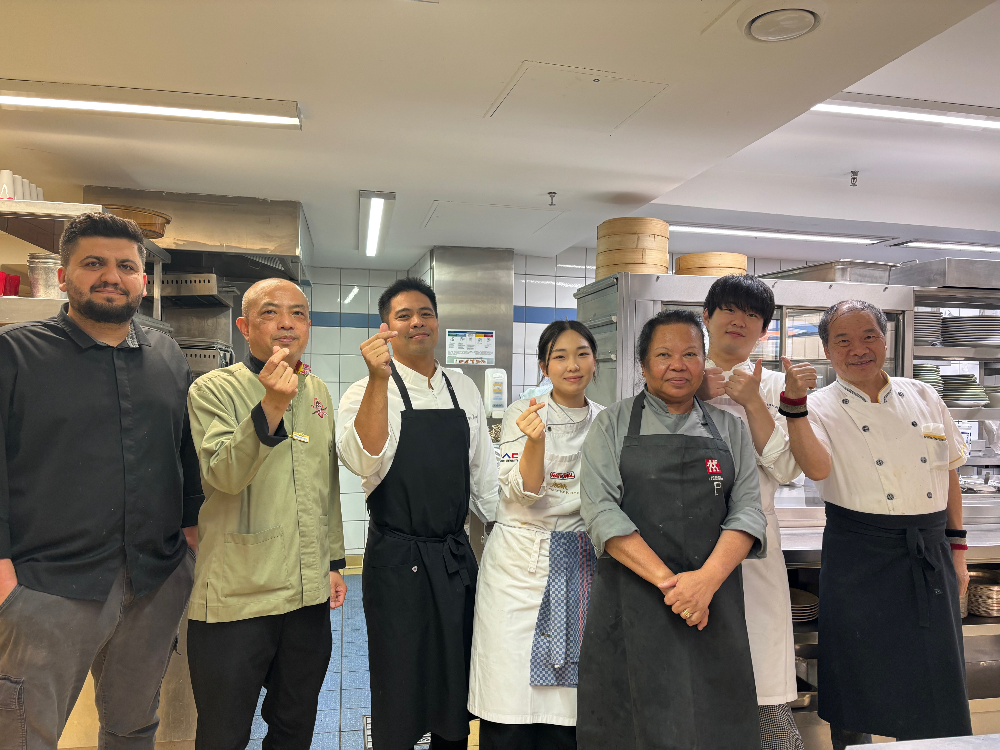
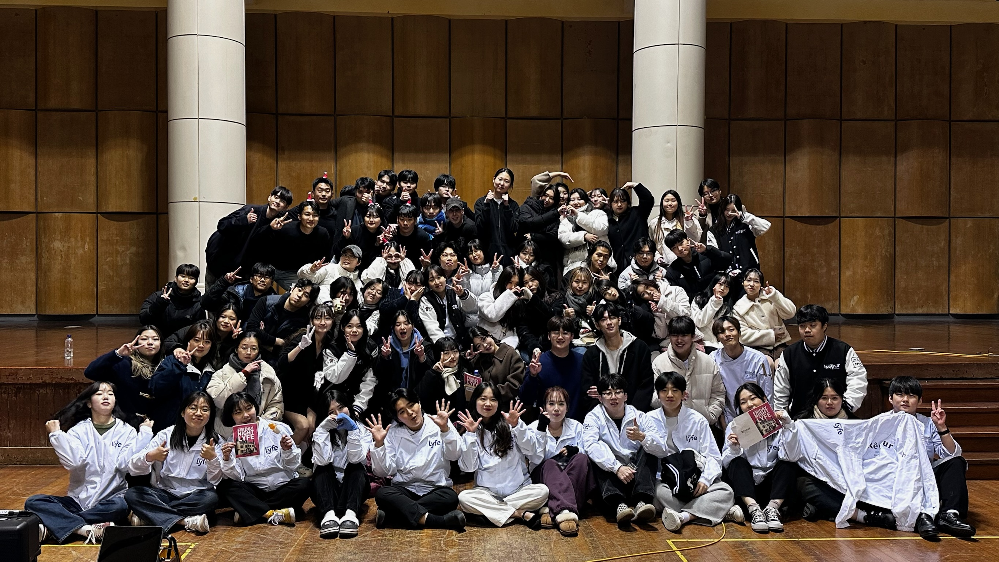
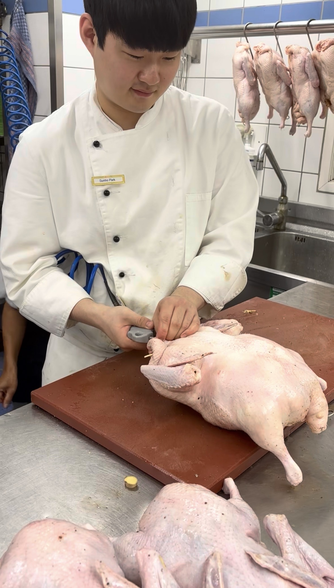
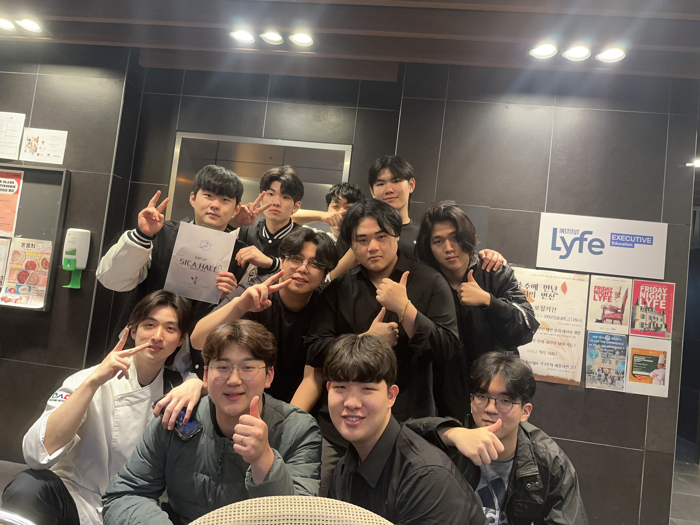

우송대학교 글로벌조리학과 & Institut Lyfe 복수학위 과정
박선호
Park Sun-ho
한국과 프랑스, 두 개의 미식 문화를 오가며 요리를 배우고 있습니다.
독일 5성급 호텔 인턴십, 창의적 레스토랑 운영, 기업 R&D 프로젝트까지
- 요리를 둘러싼 다양한 현장을 경험해왔습니다.

Education Philosophy
서두르지 않는 '숙성'의 미학으로 아이들의 속도를 존중하고, 세심한 '관점'으로 그들의 가능성을 기록하며 함께 요리하는 '식구'로서 성장의 기쁨을 공유하겠습니다.
식구(食口)
함께 먹는 사람
가족의 밥상에서 밥을 나누듯, 아이들의 곁에서 그들의 언어로 먼저 말을 건네는 멘토가 되겠습니다.
숙성(Degré)
시간과 온도의 예술
좋은 발효는 서두르지 않습니다 — 가치의 최초 가능 속도를 존중하며, 그 온도를 지켜주는 사람이 되겠습니다.
관점(Perspective)
같은 재료, 다른 이야기
한국과 프랑스 주방이 같은 재료를 전혀 다르게 쓰듯, 아이들이 하나의 재료에서 여러 가능성을 발견하도록 이끌겠습니다.
Global Experiences

Culinary Extern · Bayerischer Hof
독일 뮌헨 5성급 호텔 내 시그니처 레스토랑에서 글로벌 주방 문화와 파인다이닝 서비스 플로우를 몸소 익혔습니다.

Dual Degree Candidate · Institut Lyfe
세계 최고 수준의 요리·호스피탈리티 교육 기관에서 프랑스의 커리큘리리 로직과 미식 인문학을 실습 중입니다.
Campus Activities

Event Director (PM) · 교내 체육대회
프로그램 기획, 현장 디렉팅, 안전 관리까지 전 사이클을 관리한 대규모 행사 PM 경험입니다.

University Curriculum
실제 서비스 환경에서의 조리·기획·이운 전 과정 경험 (Culinary Production), 프랑스어 기반 커리큘리 로직과 미식 문화 이해 (French for Culinary).
Field Experiences
Executive Chef · Art-Inspired Creative Restaurant
예술 작품에서 영감을 받아 직접 창의 요리를 개발하고 알라카르트 서비스를 기획·이운했습니다. 요리를 미식의 언어로 번역한 아트 테이블 프로젝트입니다.

Pop-up Restaurant - 너울
제철 식재료가 지닌 본연의 가치를 재해석한 창의 요리를 선보인 팝업 프로젝트. 친숙한 재료를 낯선 방식으로 접근해 미식의 새로움을 전달했습니다.
Current Activities
R&D Collaborator · CJ제일제당
산학협력 기반의 실무 프로젝트에서 커리큘리 리서치와 제품 개발 프로세스를 경험 중입니다. 식품 대기업 프로젝트 교육에서 배운 것을 실무에 적용한 사례를 쌓고 있습니다.
Content Editor · 블루맥 (Blue Mag)
트렌드를 읽고 대중의 언어로 번역하는 에디터로서 기획력과 글쓰기 역량을 키우고 있습니다. 요리 문화와 라이프스타일 콘텐츠를 큐레이션합니다.